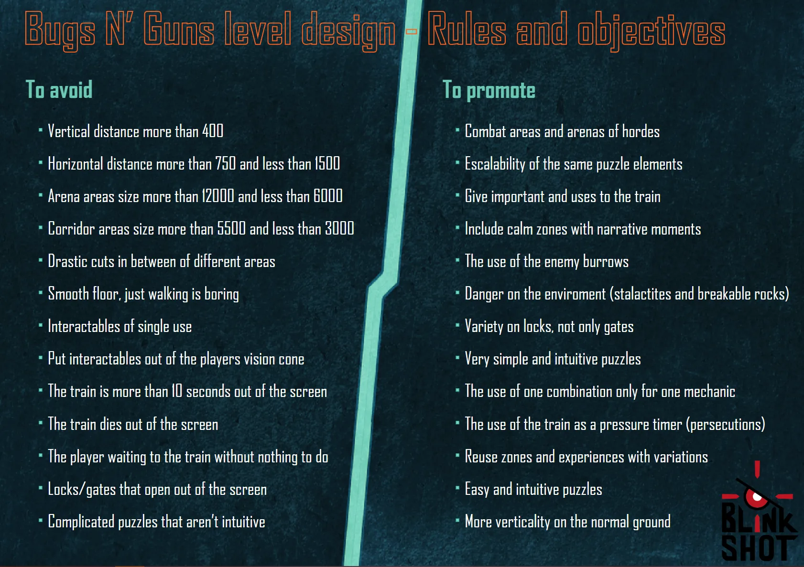
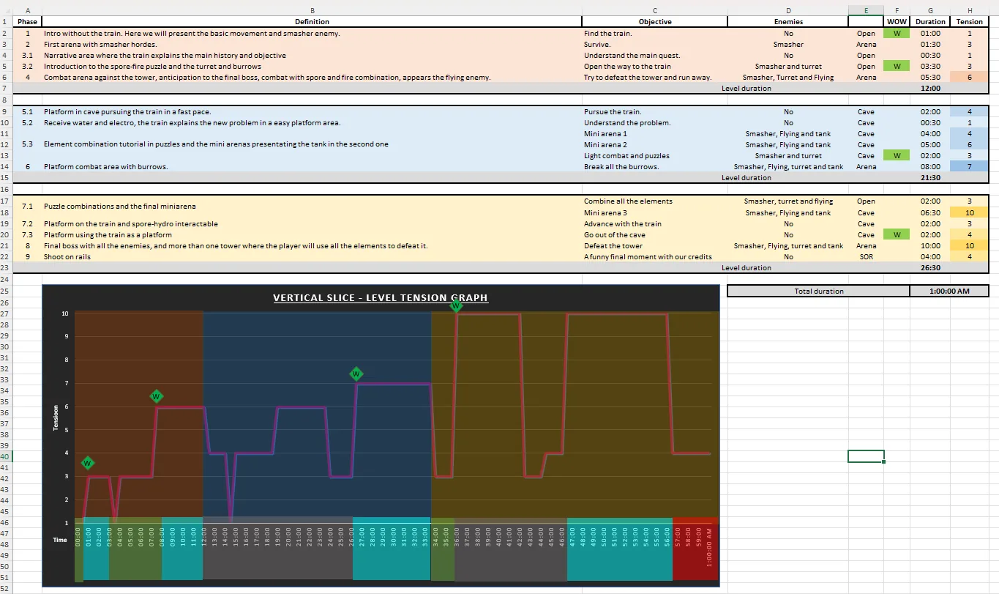
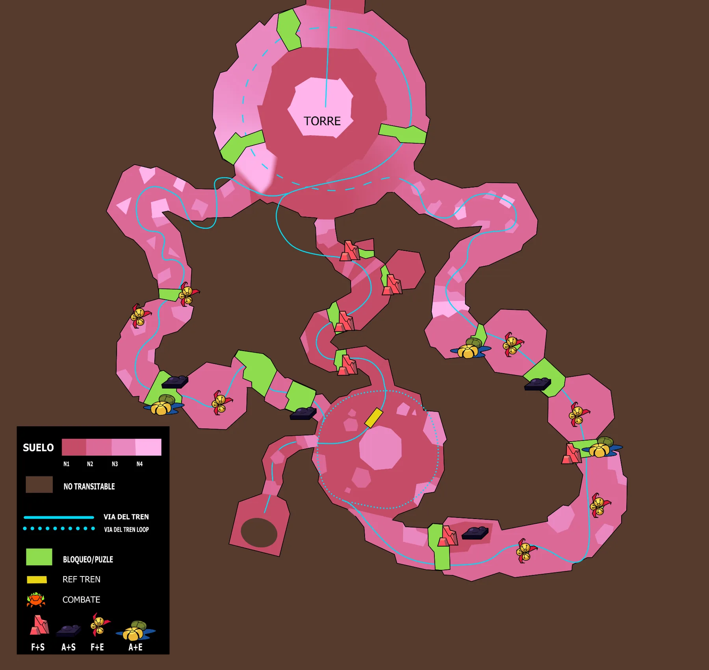
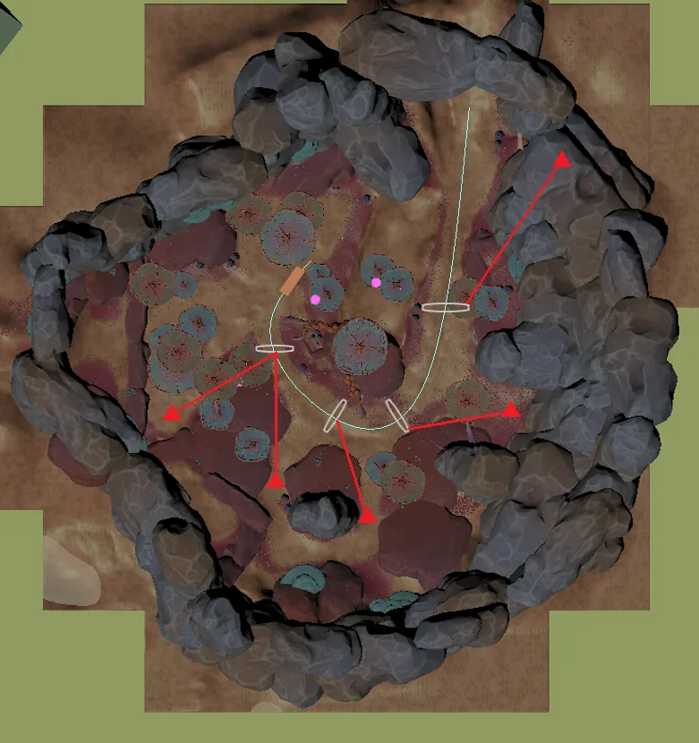
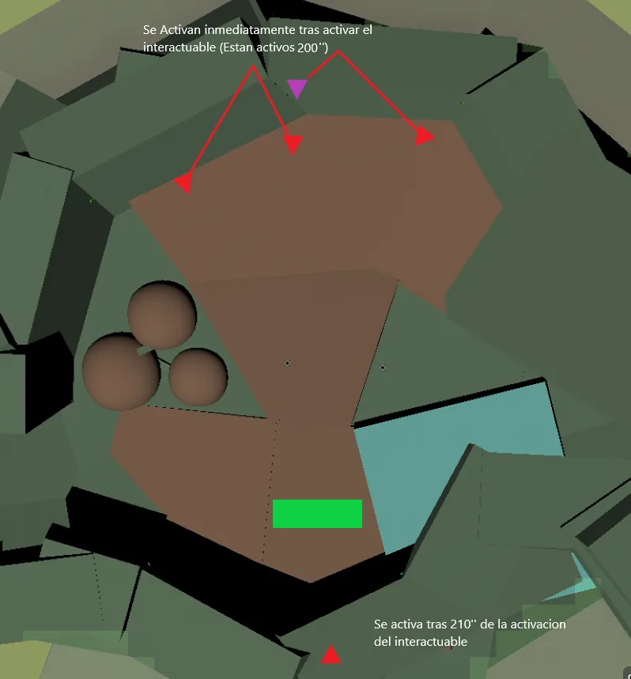

Bugs 'N' Guns
Level Design
The level design of Bugs 'N' Guns: beat chart and level layout, arenas and encounters, and prototyping ideas for every part of the level, from puzzles to the game's final stage.
This video shows the transition from the 2D layout to the level blocking.

Rules, objectives & general concept
I was directly involved in making decisions about the general concepts on which the level should be designed, including the feelings and experiences we wanted the player to have and how we planned to deliver them.
I also focused on the technical aspects of the level to make sure our goals were achievable with the team and time we had available.
The image shows the objective table, which outlines what to promote and what to avoid, as we decided to follow it for the creation of the entire level.

General path & beat chart
I was involved in the design and creation of the beat chart for Bugs 'N' Guns, the tool we used to define the rhythm, intensity and duration of all the level phases.
We determined when fights would occur, with which enemies, and how intense they would be. We also established where the puzzles would be, which elements would be used to solve them, and how difficult they would be.
Additionally, we outlined various “WOW” moments where we wanted to leave an impact on the player.

2D layout
I was involved in designing and creating the 2D layout for all the levels in Bugs 'N' Guns, from the initial whiteboard sketches to the final detailed map.
One of the major challenges was managing the diverse gameplay and multiple biomes, combined with the player's high mobility and vertical exploration, which complicated the task for our art team to visually complete the levels.
Consequently, our design strategy emphasized reusing areas efficiently while ensuring varied gameplay with minimal adjustments. Three clear examples illustrate this approach:
- Two large arenas that players revisit. By adding new elements on re-entry, such as the weapons available at that stage and slight changes in the environment, each visit is a distinctly different gameplay experience.
- Three smaller arenas for more static combat that share identical wall and ceiling designs, so most of the decoration is reused. Changing the floor layout, enemy placement and train position gives each one a unique feel.
- Symmetrical caves as the entry and exit of the largest arena, which avoids duplicating decoration work. Both focus on platforming with a twist: in one, players chase the train; in the other, they use the train as a platform. One passageway, two distinct experiences.
Arenas & encounters
During the development of Bugs 'N' Guns, I was in charge of designing all the combat and encounters in the game. Here I explain the process of designing two of the game's arenas.

First game arena
This is the first arena in the game, so it needed to introduce the basic mechanics and dynamics of gameplay (combining weapons) in a controlled and accessible environment.
The train runs alongside a pit from which no enemies can emerge, so players only need to focus on one side of the train. This reduces the arena's intensity and lets players concentrate on learning the mechanics without defending the train from multiple directions.
Naturally, the enemies here are the most basic Smashers in the game. Their sole purpose is to be practice targets, posing a low, though not nonexistent, threat. Because they arrive in waves, players must learn to combine their weapons to defeat them, which is the core gunplay mechanic.
At the end of the arena, the final spawn appears climbing down one of the rock walls. This teaches players that enemies can climb and bypass obstacles, and that they can use their weapons to “paint” the walls the enemies traverse and defeat them before they reach the ground.

Fourth game arena
This arena comes right after players receive their second weapon kit, the Electroplasm and the Hydrogel.
The train remains stationary at one end while enemies attack in waves. The pacing and intensity of the waves are controlled through the enemy counter and the AI Director, keeping the difficulty under control.
The main goal is to let players experiment and have fun with their new weapons, so the challenge is intentionally moderate, prioritizing learning and player expression over high pressure.
To support this, the layout creates a bottleneck that enhances the synergy between the two new weapons. Forcing enemies through narrow, aligned paths lets players take advantage of the Electroplasm's piercing (DPS) to hit several enemies at once, while the Hydrogel pushes enemies toward the abyss, an environmental hazard that rewards good positioning and weapon combination.
This way, the arena reinforces the weapon combination mechanics while providing a safe and engaging space to understand the strengths and interactions of the new loadout.